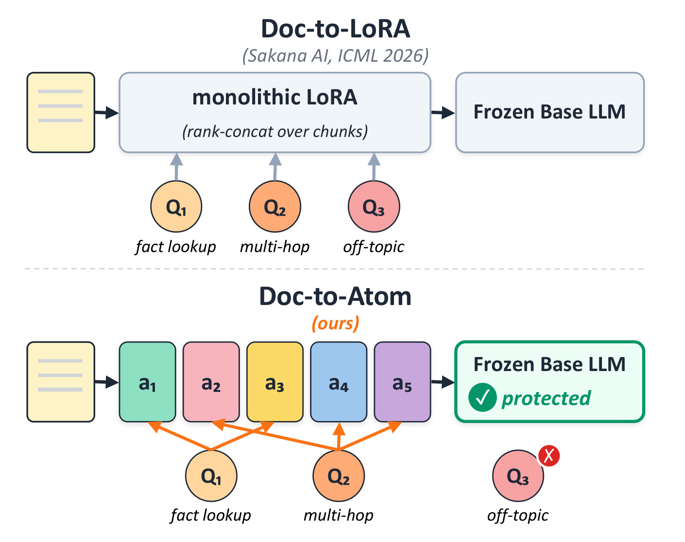
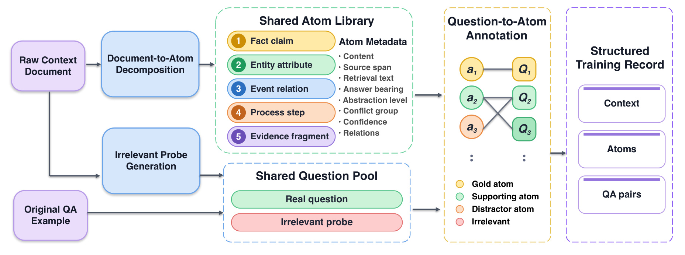
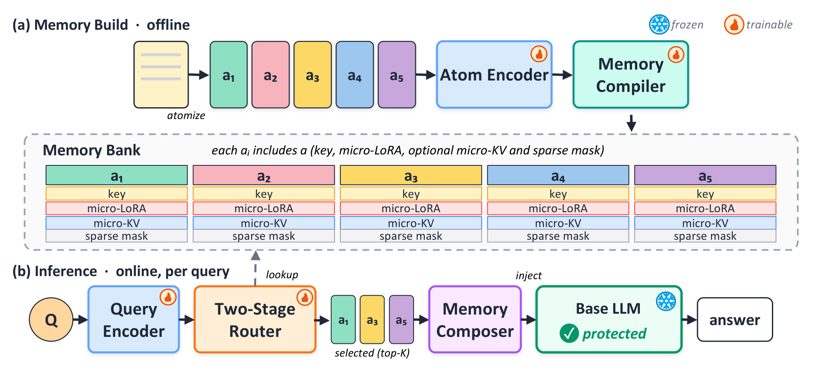
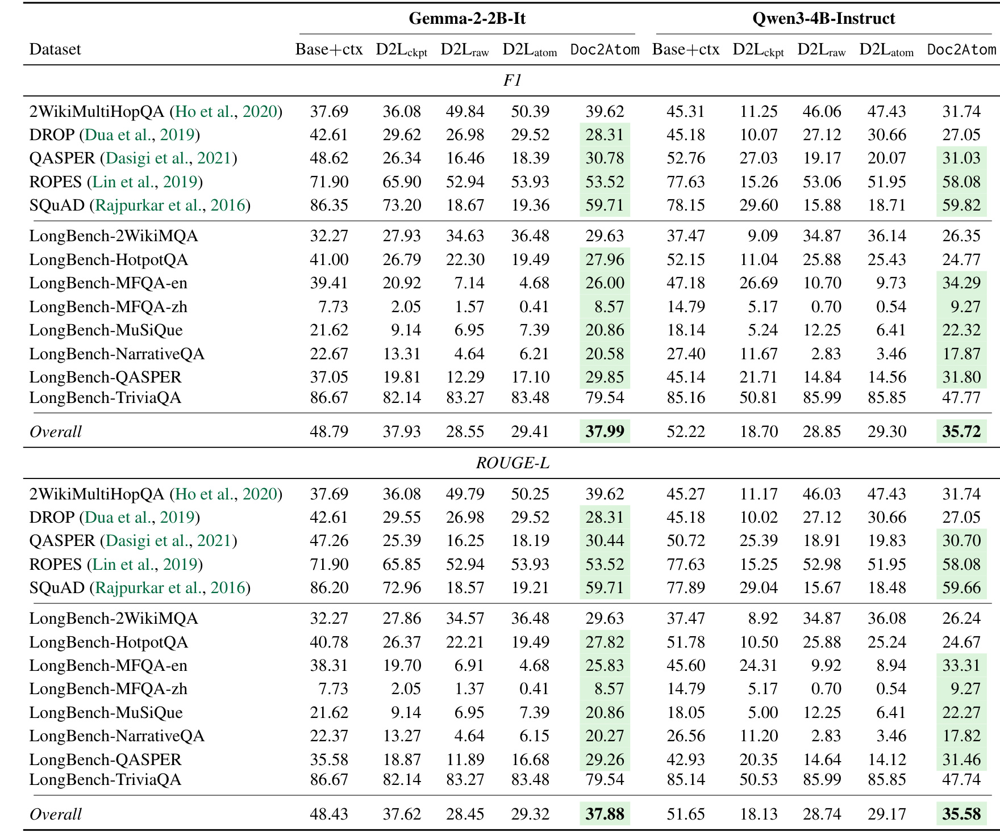
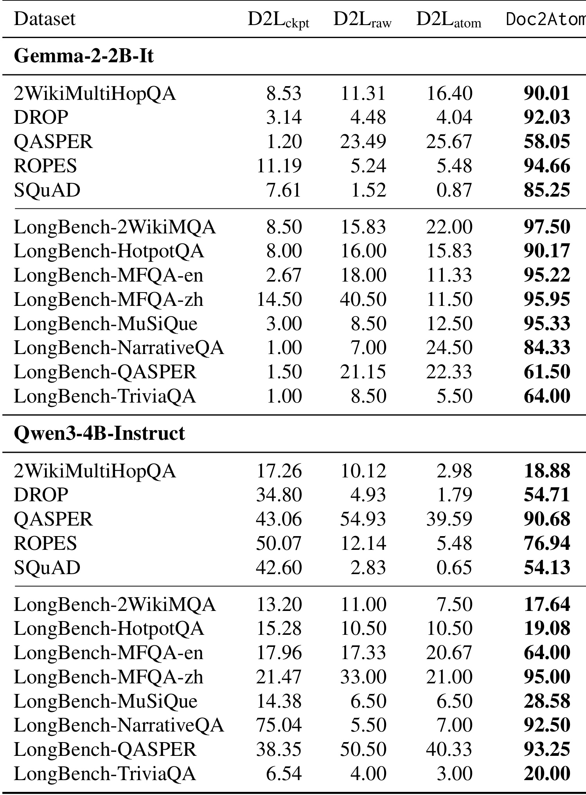
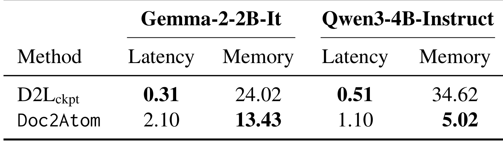
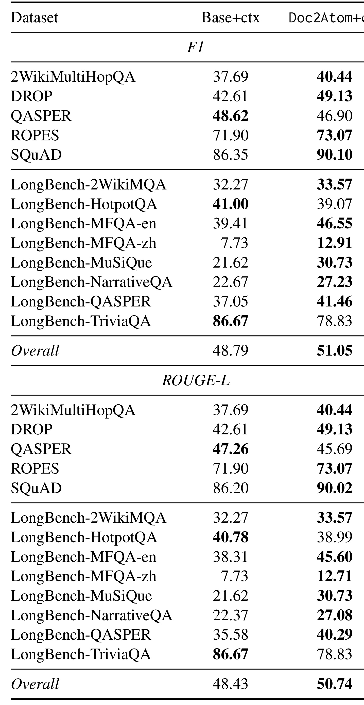
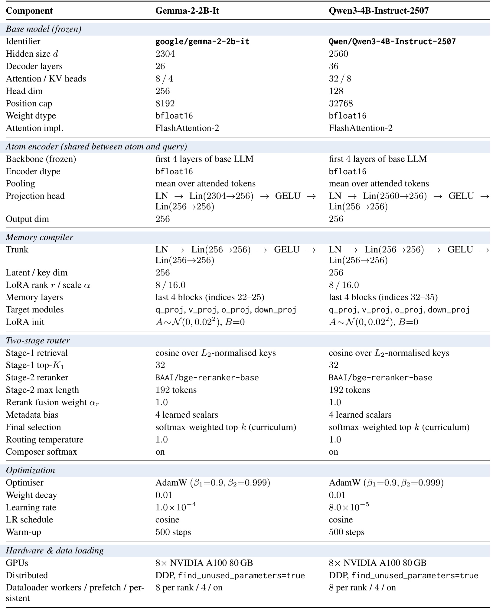

Doc-to-Atom: Learning to Compile and Compose Memory Atoms
本文讨论的是 Doc-to-Atom（Doc2Atom），一篇把长文档知识编译成可组合参数化记忆的工作。论文一作 Xingjian Diao 在首页标注为 AI Center-Mountain View, Samsung Electronics 与 Dartmouth College 双重单位，脚注说明该工作完成于 Samsung AI Center-Mountain View 实习期间；合作作者均列在 Samsung Electronics 机构下。论文入口：arXiv:2606.12400。代码/项目页：本轮只核验到论文页面和 PDF，没有在首页明确核验到独立开源仓库，因此按未确认处理。
这篇论文的核心不是再做一个长上下文 QA benchmark，而是把“把文档放进 prompt”改成“把文档拆成可检索、可组合、可拒答的参数化 atom memory”。它继承 Doc-to-LoRA 一类上下文蒸馏方向：用 hypernetwork 或 compiler 从文档生成 LoRA adapter，让 frozen base LLM 在不携带全文上下文的情况下回答文档问题。但 Doc-to-LoRA 把整篇文档压进一个单体 LoRA，任何 query 都使用同一个 adapter。Doc2Atom 的判断是：文档内部事实本来就是异质的，问题也只会触发其中一小部分证据，所以参数化记忆也应该有原子级索引、路由和组合，而不是把所有内容写成一团。
1. 背景和问题
长文档理解的传统做法是 in-context learning：把相关文本直接放进模型上下文，让模型在生成时 attend 到证据。这个方案有一个很好的性质：证据可见，模型可以在同一次前向里读取原文。但是它也有天然瓶颈。上下文越长，attention 的计算和显存成本越高；当文档变长、证据位置分散时，模型也会受到 attention dilution、lost-in-the-middle 等问题影响。更现实的系统问题是，许多文档知识会重复被问，若每次都把整篇文档塞进 prompt，线上成本和延迟都会被长文档拖住。
上下文蒸馏试图绕过这个瓶颈：让模型学习在没有原始文档 prompt 的情况下复现 full-context teacher 的输出。Doc-to-LoRA 把这个思路推进到可摊销的参数生成：给定一篇文档，hypernetwork 一次前向生成一个 LoRA adapter，之后回答这篇文档的问题时只注入 adapter，不再携带全文。这个思路很吸引人，因为它把“文档更新”变成参数更新，把运行时长上下文成本换成离线或半离线的 adapter 生成成本。
问题在于，文档不是一个单一事实，query 也不是一个单一访问模式。论文把单体文档 adapter 的缺陷拆成三类。第一类是 irrelevant-query interference：如果一个 query 与文档无关，单体 adapter 仍然会修改模型隐藏状态，可能诱导模型从文档参数里编造答案，而不是回退到 base model 或拒答。第二类是 compositional recall：一篇长文档包含很多事实、事件、属性和证据片段，单个低秩 adapter 要同时承载所有内容，遇到多跳问题时很难只激活相关子集。第三类是 scalability：文档越长，固定 rank 的 adapter 要压缩的信息越多，参数预算和检索选择能力都不随文档长度自然扩展。

Figure 1 把这种差异画得很直接。上半部分是 Doc-to-LoRA：固定 token chunks 被 rank-concat 成一个 monolithic LoRA，随后 fact lookup、多跳问题和 off-topic query 都经过同一个 adapter。它没有 per-chunk index，也没有 query 级别的选择，adapter 一旦生成就对所有问题生效。下半部分是 Doc-to-Atom：文档先被拆成 a1 到 a5 这样的 semantic atoms，每个 atom 有 key、micro-LoRA 和可选 micro-KV；查询时 router 选择相关 atoms，composer 只组装当前 query 需要的 adapter。图里 off-topic query 旁边的拒绝标记非常关键，它说明 Doc2Atom 不只是提升相关问题召回，也把“什么都不该注入”作为系统目标。
这篇论文的定位因此介于三条线之间。它不是单纯 prompt compression，因为推理时不再需要原文 token；它不是传统知识编辑，因为它不直接改 frozen base LLM 的权重，而是把 atom memory 注入指定层；它也不是普通 RAG，因为检索结果不是文本片段，而是由 atom compiler 生成的 micro-LoRA、key、mask 和可选 KV prototype。更精确地说，Doc2Atom 是一种 compositional parametric memory：先把文档知识结构化成可检索原子，再把原子编译成可组合参数，最后按 query 动态装配。
这种方向值得关注的原因有两个。第一，它把长文档 QA 的成本问题转化成 memory build 与 query-time assembly 的接口问题，系统可以在离线阶段承受 atomization 和 compilation 的开销，在线阶段只做 key retrieval、少量 rerank 和 LoRA composition。第二，它正面处理了文档外问题。很多参数化记忆方法在相关问题上看起来不错，但当问题与文档无关时仍然强行回答；Doc2Atom 把 irrelevant probes 放进训练，并在 loss 里惩罚无关问题产生非零 adapter，这让它更接近一个可以放进 QA 系统的记忆模块。
本文也有边界。论文里的 atomization 依赖 LLM 生成结构化 XML/JSON 标注，实验使用 MiniMax-M2.5 离线处理数据；训练需要 8 张 A100 80GB，使用 ZeRO-2 和 FlashAttention-2；评测主要是 QA benchmark，而不是真实企业文档库的长期增量更新。因此它证明的是一种架构可行性和 benchmark 收益，不等于已经解决了低成本、低噪声、可持续维护的生产知识库构建问题。下面的方法和实验部分会围绕这个边界展开。
2. 方法
2.1 Atomization：把文档切成可检索、可写入的知识原子
Doc2Atom 的第一步不是生成 LoRA，而是重新定义文档的最小记忆单位。论文不采用固定 token chunk，因为固定 chunk 可能切断事实边界，也可能把多个互不相关的事实混在一起。它要求 LLM-driven annotator 将原始 context document 分解为非重叠、语义自包含的 knowledge atoms。论文列出五种 atom 类型：fact claim、entity attribute、event relation、process step、evidence fragment。每个 atom 还带有 metadata，包括 content、source span、retrieval text、answer-bearing flag、abstraction level、conflict group、confidence score 和 inter-atom relations。
这个设计背后的想法是，参数化记忆要能被检索和写入，就必须有比“文档”更细的索引粒度。content 是模型应该记住的知识内容；source span 用来确保这个 atom 能回溯到原文片段；retrieval text 是 router 匹配 query 的锚点；answer-bearing flag 区分一个 atom 能否直接回答问题；conflict group 用来处理互斥事实；confidence score 则为 routing bias 和质量过滤提供先验。换句话说，atomization 阶段已经把未来训练会用到的监督结构准备好了。

Figure 2 展示了 atomization 的完整数据流。左侧原始 context document 与原始 QA example 进入 Document-to-Atom Decomposition，生成 shared atom library；中间的 irrelevant probe generation 生成表面相关但文档不可回答的问题；右侧 Question-to-Atom Annotation 把每个问题对齐到 gold atom、supporting atom、distractor atom 或 irrelevant 标签。最终 structured training record 同时包含 context、atoms 和 QA pairs。这个流程说明 Doc2Atom 的监督不只是“问题到答案”，而是“问题应该激活哪些 atoms、不该激活哪些 distractors、哪些问题应该完全不激活”。
这里的 irrelevant probe 特别重要。普通 QA 数据只告诉模型相关问题怎么回答，很少告诉模型无关问题什么时候应当沉默。Doc2Atom 为每个文档合成 surface-similar irrelevant probes：问题可能提到文档中出现过的实体或主题，但答案不能由文档推出。这样 router 不能只靠词面重合激活 atom，而必须学习 answerability boundary。这个边界随后会进入 Lirrel，让无关 query 的 composed adapter 近似为零。
Question-to-Atom annotation 则把问题分成更细的监督对象。gold atoms 是最小必要证据集，supporting atoms 可帮助推理但不是必需，distractor atoms 是表面相似、最容易误激活的负例。这个三分法比简单正负标签更适合文档 QA：多跳问题可能需要多个 gold atoms，field lookup 可能只需要一个 entity attribute，而 irrelevant probe 应该有空 gold set。对后续 router 来说，distractor 的损失权重要比普通负例高，因为它们是最容易导致错误记忆注入的对象。
2.2 Memory compiler：从 atom embedding 到 key、micro-LoRA、micro-KV 与 sparse mask
Atomization 之后，Doc2Atom 进入离线 memory build 阶段。它没有额外训练一个完全独立的 text encoder，而是复用 frozen base LLM 的前 Lenc 层作为 shared text encoder，同时服务 atom 和 query。每个 atom 的文本经过这些层后做 pooling，再通过 projection head 得到 d 维 atom embedding ei。这样做减少了额外 encoder 的语义错位：atom key 和 query key 都来自 base model 早期表示，而不是来自另一个不共享词表和表示空间的检索器。
Memory compiler 接收 atom embedding ei，输出四类对象。第一类是 provenance key ki，它是 router 的检索锚点。第二类是 micro-LoRA factors，为每个目标层 ell 和目标模块 m 生成 A 与 B 两个低秩矩阵。第三类是可选 micro-KV prototype，用于保留局部证据和顺序信息。第四类是 sparse mask logits，用于控制不同 atom 写入哪些 layer-module combination。论文强调 B 初始化为 0，这意味着训练开始时 memory 不会立即扰动 base model；写入能力通过训练逐步形成。
micro-LoRA 的意义在于，每个 atom 都不是一段文本，而是一小块可组合参数。若一个问题只需要三个 atoms，系统就不该把整个文档的 adapter 注入模型，而应该只组合这三个 atoms 对应的 micro adapters。这样一来，文档长度增长主要增加 memory bank 中 atom 数量，而不是迫使一个固定 rank adapter 承载更多无关事实。它也让冲突事实、不同证据片段和不同语义类型可以被稀疏地写入不同层或模块。

Figure 3 是本文的核心架构图。左侧 offline memory build 中，文档先 atomize 成 a1 到 an，Atom Encoder 生成 embedding，Memory Compiler 生成每个 atom 的 key、micro-LoRA、optional micro-KV 和 sparse mask，这些对象进入 Memory Bank。右侧 online inference 中，query encoder 生成 query embedding，two-stage router 从 keys 中取 top-K atoms，Memory Composer 把它们的 micro-LoRA factors 组装成 query-specific adapter，再注入 frozen base LLM。注意图中 base LLM 标为 protected：Doc2Atom 不是改写 base weights，而是对指定 memory layers 做可控注入。
2.3 Two-stage router 与 query-specific adapter composition
在线阶段的第一步是 routing。给定 query embedding eq，router 先投影并 L2 normalize 得到 kq，然后与所有 provenance keys ki 做 cosine maximum inner product search，取出第一阶段候选。第二阶段可选地用 frozen cross-encoder 对 query-atom text pairs rerank，并加入 metadata bias，例如 confidence、answer-bearing status、conflict group membership 和 semantic type。最终 score si 经过 top-K 选择和 softmax normalization，得到 sparse routing weights wi。
这个 two-stage router 同时服务准确率和保护性。第一阶段需要高召回，避免漏掉关键 atom；第二阶段和 metadata bias 需要把 distractor、conflict 和低置信 atom 压下去；最后的 routing weights 决定 micro-LoRA 的线性组合强度。如果一个 query 是 irrelevant probe，理想状态是所有相关分数都很低，最后 composed adapter 也接近零。这比 RAG 中“取回文本后再让模型判断是否可答”更前置，因为它直接影响是否向模型注入参数扰动。
Memory Composer 的核心公式是路由加权求和。对每个 layer ell 和 module m，被选中的 K 个 atoms 产生的 LoRA factors 组合为：
符号解释：$A_{m,i}^{(\ell)}$ 和 $B_{m,i}^{(\ell)}$ 是第 i 个 atom 在第 ell 层、第 m 个模块上的 micro-LoRA 因子，$w_i$ 是 router 给出的归一化权重，$A_c^{(\ell,m)}$ 与 $B_c^{(\ell,m)}$ 是当前 query 的 composite LoRA。这个公式说明 Doc2Atom 的组合是参数空间组合，不是把 atom 文本拼接进 prompt。组合后的 factors 会再乘上 aggregated sparse gate g，控制哪些 layer-module 真的写入。
如果启用 micro-KV，selected atoms 的 KV slots 会按 routing weights 缩放，并沿 sequence dimension 拼接成 compact prefix。论文没有把 micro-KV 作为唯一记忆形式，而是把它放在可选位置：LoRA 负责参数化写入，KV prototype 保留更局部的证据结构。所有写入都限制在最后 nL 个 decoder layers，论文给出的理由是 memory 应该接近输出层，以减少对底层语言表示的干扰。这一点和知识编辑中的保护思路相近：越靠近输出层，越容易限制影响范围。
2.4 多目标 teacher-student 训练：蒸馏、路由、拒答和保护
Doc2Atom 的训练采用 teacher-student。Teacher forward pass 把完整文档 D 和 query q 放进 frozen base model，得到 full-context reference logits yteacher。Student forward pass 只输入 query q，但注入由 selected atoms 组装出的 composite LoRA，得到 ystudent。最基本目标是让 student 在没有原文上下文的情况下复现答案：
符号解释：$y_t$ 是答案 token，$q$ 是问题，$A$ 表示可用 atom memory。这个目标保证 assembled memory 对最终答案有用，但它本身不足以约束 student 为什么回答。为了让 student 分布更接近 full-context teacher，论文加入温度缩放 KL：
符号解释：$\sigma$ 是 softmax，$\tau$ 是 distillation temperature。这个损失把 teacher 在答案位置的概率分布传给 student，而不仅仅是硬标签答案。对于长文档问题，teacher logits 代表“读了原文后”的模型行为，student 要通过参数化 atom memory 逼近它。
Router 的监督来自 question-to-atom annotation。论文使用 per-atom weighted binary cross entropy：
符号解释：$m_i$ 表示 atom i 是否为 gold atom，$s_i$ 是 router score，$\alpha_i$ 对 negative、gold、distractor 分别取不同权重，其中 distractor 权重更高。这个设计的关键是，错误激活一个表面相似但事实不支持的 atom，比普通负例更危险。若第二阶段 reranker 启用，还会对 reranking scores 加 listwise softmax cross-entropy。
无关问题的保护由 Lirrel 承担：
符号解释：$Q_{irrel}$ 是 irrelevant probes 集合，$A_c$ 与 $B_c$ 是当前 query 的 composite LoRA。这个损失不要求模型对无关问题生成某个复杂 rationale，而是直接惩罚 composed adapter 的范数，使 router 对无关问题尽量不写入记忆。它对应 Figure 1 里 off-topic query 的拒绝路径，也对应 Table 2 的拒答评测。
论文还加入 knowledge protection、sparse regularization、composition consistency、conflict 和 confidence losses。Protection loss 约束 composite delta 的 Frobenius norm，或使用 null-space projection 让更新方向避开 base model 的主成分；sparse loss 让 gate 激活率接近目标密度 rho；composition consistency 用 gold-mask forced routing 与主 forward pass 的对称 KL，保证多个 atoms 组合后不比单 atom 或强制路由更不稳定；conflict loss 要求同一 conflict group 中只激活 gold atom；confidence loss 让 routing weights 与标注置信度先验对齐。总体目标可以理解为：
符号解释：各个 lambda 是论文训练日程中的权重；省略号代表 rerank、conflict、confidence 等辅助项。这个式子不是论文给出的单行固定权重表，而是对多目标训练的结构化概括。重要的是，Doc2Atom 不是只优化 QA 准确率，它同时优化“选对 atom”“不该选时不选”“写入不要破坏 base model”“多个 atoms 组合时仍稳定”。
2.5 与 Doc-to-LoRA 的接口差异和工程边界
Doc-to-LoRA 的接口是 document -> adapter；Doc2Atom 的接口是 document -> atom bank，然后 query -> selected atoms -> adapter。这个差异带来两类工程后果。第一，build 阶段更复杂。Doc2Atom 要做 LLM annotation、source-span validation、irrelevant probe generation、question-to-atom annotation、compiler forward 和 memory bank 写入。相比一次生成单体 adapter，它的离线流水线有更多组件，也更依赖标注质量。第二，online 阶段更可控。查询到来时，系统可以只取 top-K atoms，按权重组合 micro-LoRA，并在 irrelevant query 上让 adapter 近零。换句话说，它用更重的结构化构建换来了更细的在线选择。
训练 curriculum 也反映了这种复杂性。Stage 1 只做 single-atom memory，router 每次选一个 atom，激活核心 LM、distill、route、irrel 和 protect losses；Stage 2 把 K 增到 4，加入 composition 与 sparse；Stage 3 把 K 增到 8，加入 conflict、confidence，并加强 irrelevant suppression；Stage 4 保持 K=8，加强 sparse writing。这个顺序说明多 atom 组合不是训练一开始就稳定的能力，需要先让单 atom 写入和路由学会，再逐步增加组合难度。
从复现角度看，Doc2Atom 有几处关键假设。其一，atomization 的 source span 必须可靠，否则 atom content 会引入 hallucinated evidence；其二，query-to-atom annotation 要能区分 gold、supporting 和 distractor，否则 router 学不到细粒度边界；其三，base model 前 Lenc 层作为 shared encoder 是否足以覆盖不同语种和领域，需要单独验证；其四，micro-LoRA 写入最后 nL 层能减少干扰，但也可能限制某些需要深层推理重构的知识。论文实验给出的是一个可行配置，不是所有系统都能直接套用的默认答案。
2.6 为什么 atom memory 不是普通 RAG
Doc2Atom 很容易被误读成“把 RAG 的文本片段换成 LoRA 片段”。这个说法只抓到了一半。RAG 的核心接口是 query 检索文本证据，然后把证据显式放进 prompt；Doc2Atom 的接口是 query 检索已经编译好的参数片段，然后通过 adapter 改变模型生成分布。二者都需要 retrieval，但 retrieval 之后的对象不同。RAG 的失败常出现在证据被取回但模型没有正确使用，或者 prompt 太长导致证据被稀释；Doc2Atom 的失败则可能出现在 atom 编译错误、routing 权重错误、micro-LoRA 组合后产生干扰，或者 irrelevant query 没有保持零扰动。也就是说，Doc2Atom 把一部分“读证据”的难题前移到了 memory build 和 compiler 训练阶段。
这个差异也改变了可解释性。RAG 可以把取回的段落展示给用户，用户能直接检查模型依据；Doc2Atom 的 micro-LoRA 本身不可读，只能通过 provenance key、source span、atom metadata 和 router logs 间接审计。论文因此强调每个 atom 都要有 source span 和 retrieval text，而不是只保留 embedding 或 adapter。如果没有这些元数据，系统虽然能跑，但无法回答“这次注入的 adapter 来自原文哪一段”。在需要审计的场景里，Doc2Atom 应该保留 atom-level trace：query 命中哪些 atom、每个 atom 的 routing weight、是否存在 conflict group、是否来自 generated irrelevant probe 的边界训练，以及最终 composed adapter 的范数是否异常。
另一个差异是权限和更新。文本 RAG 可以在检索阶段做权限过滤，过滤掉用户无权读取的文档片段；Doc2Atom 如果把多个权限域的 atoms 编译进同一个 memory bank，就必须保证 router 与 composer 在查询时仍然遵守权限边界。否则，即便不显示原文，adapter 也可能把无权知识注入输出分布。论文没有把这个问题作为主实验，但它是参数化记忆落地时不能绕开的系统约束。一个更稳的实现应该让 memory bank 按文档、租户、权限和版本分区，query-time assembly 只能从当前授权分区取 atoms。
最后，Doc2Atom 不是完全替代文本上下文。Table 5 说明 atom memory 和 full context 可以叠加，尤其在聚合和多跳任务上可能提供互补信号。更合理的工程形态可能是混合式：短问题先走 atom memory，低置信或高风险问题再回退到文本证据；需要可审计答案时同时返回 atom source spans；当 router 发现 query 与任何 atom 都不匹配时，明确拒答或转向普通检索。这样 Doc2Atom 的价值就不只是压缩上下文，而是给文档知识提供一个可组合、可拒答、可缓存的参数化访问层。
3. 实验结果
3.1 实验设置和对照组
论文在两个 frozen instruction-tuned base LLM 上评估：Gemma-2-2B-It 和 Qwen3-4B-Instruct-2507。Atomization 离线由 MiniMax-M2.5 完成。对照组包括 D2Lckpt、D2Lraw、D2Latom 和 Base+ctx。D2Lckpt 是 Sakana AI 发布的官方 Doc-to-LoRA checkpoint；D2Lraw 在五个 source datasets 上重新训练 Doc-to-LoRA；D2Latom 使用同一 D2L 架构但训练在 atomized 版本数据上，用来隔离 atomization 本身是否有效；Base+ctx 则把完整文档放入 frozen base LLM，上下文可见，作为 ICL reference。
任务覆盖 SQuAD、DROP、ROPES、2WikiMultiHopQA、QASPER，以及多个 LongBench 子集，包括 2WikiMQA、HotpotQA、MFQA-en、MFQA-zh、MuSiQue、NarrativeQA、QASPER 和 TriviaQA。前五个源数据用于训练和 in-distribution 测试，LongBench 子集用于 zero-shot long-context generalization。指标是 word-level F1 和 ROUGE-L。本文笔记中的所有数字均来自论文 PDF 表格转录，没有独立复现实验，也没有重新跑显著性检验。
3.2 主结果：Doc2Atom 的收益主要来自长文档和多跳泛化

Table 1 是主结果。Gemma-2-2B-It 上，Doc2Atom Overall F1 为 37.99，ROUGE-L 为 37.88；D2Latom 分别是 29.41 和 29.32，因此 Doc2Atom 相比 atomized D2L 架构仍有约 8.6 点整体优势。Qwen3-4B-Instruct 上，Doc2Atom Overall F1 为 35.72，ROUGE-L 为 35.58；D2Latom 是 29.30 和 29.17，优势约 6.4 点。这个对比说明，收益不只是把 raw document 换成 atomized training data，因为 D2Latom 已经使用 atomized 数据但仍是单体 adapter 架构；Doc2Atom 的 query-conditioned atom assembly 贡献了额外收益。
更细看，Doc2Atom 在 LongBench 的若干子集上优势明显，尤其是 MFQA、MuSiQue、NarrativeQA 和 QASPER 这类长文档、多跳或聚合任务。论文正文也强调，Doc2Atom 在 MFQA、MuSiQue、NarrativeQA、QASPER 上可以比 D2Lraw 高出数倍 F1。这个现象与方法假设一致：如果问题只需单个显式事实，单体 adapter 可能还能压住；如果问题需要从文档不同区域组合证据，atom-level routing 和 micro-LoRA composition 就更有价值。
不过 Table 1 也显示 Doc2Atom 并不等于全上下文上界。Base+ctx 在许多任务上仍然更高，例如 Gemma 的 SQuAD、ROPES 和 TriviaQA，Qwen3 的多项 Base+ctx 也很强。这说明参数化记忆是为了降低运行时上下文成本和增强选择性，不是无条件超过“直接给全文”的 teacher/reference。它更像一种在成本、可组合性、拒答能力和效果之间折中的系统模块。
3.3 拒答能力：off-document query 是 Doc2Atom 的关键卖点

Table 2 评估 irrelevant queries。每篇文档配上无关问题，模型被 prompt 要求在无法由 context 支撑时回答 unanswerable，表中报告这个拒答目标的 F1。Gemma-2-2B-It 上，Doc2Atom 在多数 benchmark 上达到 85 以上，LongBench-2WikiMQA 为 97.50，DROP 为 92.03，ROPES 为 94.66，LongBench-MFQA-zh 为 95.95。相比之下，三个 D2L baseline 多数行低得多，很多只有个位数或十几分。Qwen3-4B-Instruct 上绝对拒答更难，但 Doc2Atom 仍然在所有列出的 benchmark 上胜出，例如 QASPER 90.68、ROPES 76.94、LongBench-NarrativeQA 92.50、LongBench-QASPER 93.25。
这个结果很重要，因为它检验的不是“有没有记住文档内容”，而是“什么时候不要使用文档记忆”。Doc-to-LoRA 的单体 adapter 一旦生成，就会对无关 query 产生隐藏状态扰动；Doc2Atom 通过 irrelevant probes、routing supervision 和 Lirrel 把无关问题转化为低权重或近零 adapter。若把这种系统放到企业文档问答里，拒答质量可能比平均 F1 更关键：错误地把某份文档的局部知识套到另一个问题上，会制造看似有来源但实际不被文档支撑的答案。
3.4 效率：显存更低，但 compile latency 更高

Table 3 给出更新阶段成本。Gemma-2-2B-It 上，D2Lckpt latency 为 0.31 秒、additional memory 为 24.02GB；Doc2Atom latency 为 2.10 秒、additional memory 为 13.43GB。Qwen3-4B-Instruct 上，D2Lckpt latency 为 0.51 秒、memory 为 34.62GB；Doc2Atom latency 为 1.10 秒、memory 为 5.02GB。也就是说，Doc2Atom 的额外显存明显更低，尤其在 Qwen3 上下降很大，但 per-update compile latency 更高。
这个 tradeoff 符合架构直觉。Doc2Atom 需要 atom encoder、memory compiler 和 routing 相关组件，每篇文档会产生多个 atom 对象，而不是一次生成单体 LoRA；因此编译阶段不会比 D2Lckpt 更轻。它节省显存的原因在于按 atom 生成低秩 micro adapters，并在 query time 只组装 top-K 相关 atoms，不需要把整篇文档内部化成大而固定的 adapter。对应用来说，这意味着 Doc2Atom 更适合文档更新频率较低、查询频率较高、且需要避免无关干扰的场景；如果文档每秒大量变更而很少被查询，较高 compile latency 可能不划算。
3.5 Atom memory 与原文上下文可以互补

Table 5 是附录里的一个有意思的对照：同样给 Gemma-2-2B-It full document prompt，比较 Base+ctx 与额外带 atom memory 的 Doc2Atom+ctx。Overall F1 从 48.79 提到 51.05，ROUGE-L 从 48.43 提到 50.74。LongBench-MuSiQue 的 F1 从 21.62 到 30.73，LongBench-MFQA-en 从 39.41 到 46.55，DROP 从 42.61 到 49.13。论文解释为，结构化 atom memory 能在聚合和多跳任务上提供预分解视角，即使原文还在 context 中，atom memory 仍能补充信号。
这张表帮助理解 Doc2Atom 的另一种使用方式：它不一定只能替代全文 prompt，也可以作为 full-context reasoning 的辅助结构。对于某些长文档任务，模型即便看见原文，也未必能稳定找到关键证据；atomization 预先把证据、关系、冲突和 answer-bearing 标记组织好，query-time memory 可能起到“结构化索引”的作用。但这也提示风险：如果 atomization 错了，错误结构也会被带进 full-context 场景，所以 source span validation 和 annotation quality logging 不是附录细节，而是系统可信度的一部分。
3.6 实现配置：收益背后有明确训练和硬件预算

Table 6 给出可复现配置。Gemma 和 Qwen3 都使用 base LLM 的前 4 层作为 atom/query encoder，projection output dim 为 256；memory compiler 使用 rank r=8、scale alpha=16.0 的 LoRA，写入最后 4 个 decoder blocks，目标模块包括 q_proj、v_proj、o_proj 和 down_proj；stage-1 retrieval top-K1 为 32，第二阶段 reranker 是 BAAI/bge-reranker-base，最终 selection 按 curriculum 做 softmax-weighted top-k。训练使用 AdamW、cosine schedule、500 warmup steps，并在 8 张 A100 80GB 上进行。
这些配置说明 Doc2Atom 的 benchmark 收益并不是一个轻量 prompt trick。它需要稳定的数据构建流水线、足够的训练显存、跨组件损失调度，以及针对 base model 层结构的写入位置选择。rank=8 和最后 4 层写入看起来克制，但 atom bank、router 和 compiler 的训练仍然是系统工程。若要迁移到更大模型或更长文档库，需要重新评估 atom 数量上限、top-K、KV prototype 是否启用、sparse gate density、metadata bias 是否可靠，以及是否有足够无关问题覆盖真实负例空间。
4. 总结
Doc2Atom 的贡献可以概括为一句话：它把文档级参数化记忆改造成 atom 级可检索、可组合、可拒答的记忆库。相对于 Doc-to-LoRA，它不再让所有 query 共享同一个文档 adapter，而是先把文档拆成 semantic atoms，每个 atom 编译出 key、micro-LoRA、可选 micro-KV 和 sparse mask；query 到来时，two-stage router 只选择相关 atoms，composer 组合 query-specific adapter，并在无关 query 上尽量保持近零扰动。
我认为这篇论文最有价值的点不是主表的平均分，而是它把参数化记忆系统中经常被混在一起的三个问题分开处理：知识应该以什么粒度写入、query 应该激活哪些知识、无关 query 应该如何保持沉默。Figure 1 和 Table 2 形成了一个清晰闭环：单体 adapter 的 off-topic 干扰是问题，irrelevant probes 与 Lirrel 是训练机制，拒答 F1 是验收指标。对真实 QA 或 agent memory 系统来说，这种“不要答”的能力比单纯提高相关问题得分更接近产品风险。
它的局限也同样清楚。第一，atomization 依赖强 LLM 标注，若 source span、conflict group 或 gold/supporting/distractor 标签质量不稳，后续 router 和 compiler 会学习错误结构。第二，实验仍以 benchmark QA 为主，尚未证明在持续更新、多版本文档、权限隔离和用户个性化记忆中同样稳定。第三，compile latency 高于 D2Lckpt，训练硬件预算也不低，因此它更适合高复用文档库，而不是一次性、低频访问文档。第四，论文没有公开复算环境下的独立代码验证，本笔记中的指标均是 PDF 报告值。
后续如果继续跟进，我会优先看三件事：一是 atomization 的失败率和人工可审计性，尤其是 source span mismatch 与 irrelevant probe 误标；二是不同 atom 数量、top-K 和 conflict group 密度下的 router calibration，确认近零 adapter 是否真的对应不可答问题；三是把 Doc2Atom 和文本 RAG 混合使用的收益，因为 Table 5 已经暗示 atom memory 与 full context 可以互补。若能把 atom bank 做成可版本化、可撤销、可权限过滤的结构，Doc2Atom 的思想会比单篇 QA benchmark 更有长期价值。